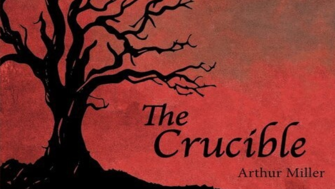

The Crucible: Drama Production
Compare Characters - my own POV
Posted on By: Lilly | posted on 11/29 | Category: Drama club production/Compare of Characters
All Posts

Characters/cast list:
Something to think about…how may this play be a hit at today’s government?
Of modern governance by showing how paranoia, overrating power importance, and the abuse of institutional power can corrupt a society. The play's themes show several political dynamics.
This story shows the flaws in human nature and society. Showing the timeless mistakes humans make, for those who forget the past are doomed to repeat it. Loosely based on true, historical events, but heavily fictionalized drama.
Containing witches, a neighbourhood who was full of trust, now turning on themselves, a love affair, and much more within itself.
Comparing intentions and endings (Warning: SPOILERS)
| Character/role | Stance (where they stand) | Turning Point | Final Belief or Action | |
|---|---|---|---|---|
| Pancakes | John Proctor | Stands as an independent complex though tragic hero. Faced with the guilt of a love affair and disagreements with Salem's corrupted Court. | In act 3 he publicly confesses his love affair with Abigail Williams in the court, exposing Abigail to save his wife Elizabeth. A turn takes place in act 4 when he tears up his signed confession. | In John Proctor's final action is to rip up his false confession of Witchcraft in choosing execution by hanging rather than have good on his name for life. Choosing to die in truth rather than live a lie. |
| Pancakes | Toast and Peanut butter | Protein Shake | Toast and Peanut butter | |
| Pancakes | Toast and Peanut butter | Protein Shake | Toast and Peanut butter |